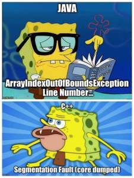
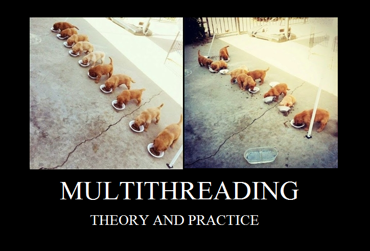

Reasons to Love Golang

The Go Programming language or GoLang as it is popularly known , was introduced by Google in 2007.As of September 2019 it has been given a TIOBE index of 14[1].
The design philosophy behind Go is to take the blazing speed of languages like C and add inbuilt highfalutin memory management capabilities to provide us with the best of both worlds.
Here are a few reasons I find Go refreshing
1:99 problems but malloc ain't one:
For erudite Java programmers who may find it below them to get one's hands dirty and rummage through the memory for making room for variables and for clearing up used space, Go plays GarbageMan for you, taking care of these plebeian necessities.
Someone's got to do the dirty job.
But this doesn't mean you completely have to take your hands off the wheel , we can still indulge in things like pointer arithmetic and using memory references because who doesn't like efficiency?
and speaking of efficiency...2:built in data types that snuggle in nicely:
Go features several data type sizes for accommodating numbers:
- int8
- int16
- int32
- int64
and
- uint8
- uint16
- uint32
- uint64
finding the right fit for your data while being mindful of memory contraints has never been easier!
3:supports both static and dynamic variable declaration
Go is strictly typed but variables can be named and used anywhere with a dynamic
myVariable := "someString"
or
myVariable var string = "someOtherString"
really handy as a lot of redundant typing can be avoided
4:does not need a virtual machine:
Back in the day when there was a plethora of gadgets to support and lack of standardization, it was a great idea to have a "write one, run anywhere" philosophy.

But let's face it virtual machines are soooo....2000s
Go compiles to native code, meaning that for any given target,it directly generates executables and binaries thereby doing away with need for VMs
5:decent error handling
when things crash and burn , you need some sort of handle on things , sure things are bad, but how bad?
when failing it is important to fail gracefully
go allows us to capture errors from methods ,and ignore them,handle them or panic() in the face of danger
6: Goroutines -> multithreading minus the hassle
Parallelization is a more than just a hip thing in this day of information overload and dwindling attention spans , you can't expect a user to tolerate any unnecessary time overheads. And time is truly precious
Java 8 even introduced Parallel streams keeping this in mind , and we see no of processor cores increasing by every year to keep pace with Moore's Law.
But I digress.
Point is Java does support Parallelization through Multi Threading ,but let's face it, it is a bit of a learning curve to learn all the libraries and we have to account for the complications arising from using threads in your program.
Go routines to the rescue!
"Goroutine is a lightweight version of a thread which stores less memory and therefore, could be spun much faster [2], so you can have functions running in the background while focussing on other stuff like wondering about"does linear time even exist?"
7:cute and adorable mascot
let's face it , for humans to really dig and relate to a product , they need it to carry a personality , an identity , a brand.

The Geeky looking Go Gopher stands as a "symbol for the Go project and Go programmers everywhere"[3]
Sure beats being faceless , and nothing says I'm good at "digging" through data and doing number "crunching" than a burrowing bucktoothed rodent.